library(maftools)
#path to TCGA LAML MAF file laml.maf = system.file('extdata', 'tcga_laml.maf.gz', package = 'maftools') #clinical information containing survival information and histology. This is optional laml.clin = system.file('extdata', 'tcga_laml_annot.tsv', package = 'maftools') laml = read.maf(maf = laml.maf, clinicalData = laml.clin, verbose = FALSE)
#By default the function plots top20 mutated genes oncoplot(maf = laml, draw_titv = TRUE)
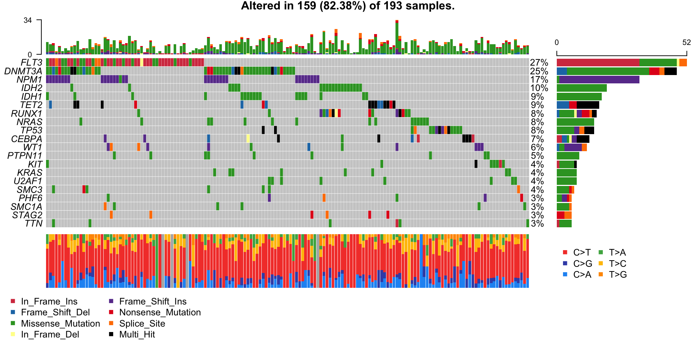
#One can use any colors, here in this example color palette from RColorBrewer package is used vc_cols = RColorBrewer::brewer.pal(n = 8, name = 'Paired') names(vc_cols) = c( 'Frame_Shift_Del', 'Missense_Mutation', 'Nonsense_Mutation', 'Multi_Hit', 'Frame_Shift_Ins', 'In_Frame_Ins', 'Splice_Site', 'In_Frame_Del' ) print(vc_cols) #> Frame_Shift_Del Missense_Mutation Nonsense_Mutation Multi_Hit #> "#A6CEE3" "#1F78B4" "#B2DF8A" "#33A02C" #> Frame_Shift_Ins In_Frame_Ins Splice_Site In_Frame_Del #> "#FB9A99" "#E31A1C" "#FDBF6F" "#FF7F00" oncoplot(maf = laml, colors = vc_cols, top = 10)
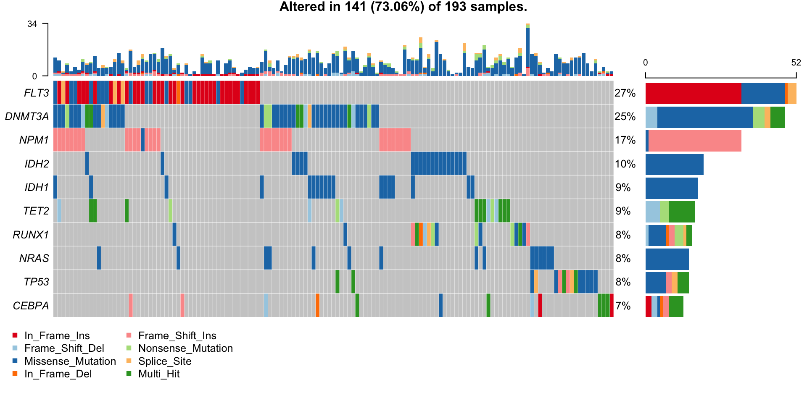
There are two ways one include CN status into MAF. 1. GISTIC results 2. Custom copy number table
Most widely used tool for copy number analysis from large scale studies is GISTIC and we can simultaneously read gistic results along with MAF. GISTIC generates numerous files but we need mainly four files all_lesions.conf_XX.txt, amp_genes.conf_XX.txt, del_genes.conf_XX.txt, scores.gistic where XX is confidence level. These files contain significantly altered genomic regions along with amplified and deleted genes respectively.
#GISTIC results LAML all.lesions = system.file("extdata", "all_lesions.conf_99.txt", package = "maftools") amp.genes = system.file("extdata", "amp_genes.conf_99.txt", package = "maftools") del.genes = system.file("extdata", "del_genes.conf_99.txt", package = "maftools") scores.gis = system.file("extdata", "scores.gistic", package = "maftools") #Read GISTIC results along with MAF laml.plus.gistic = read.maf( maf = laml.maf, gisticAllLesionsFile = all.lesions, gisticAmpGenesFile = amp.genes, gisticDelGenesFile = del.genes, gisticScoresFile = scores.gis, isTCGA = TRUE, verbose = FALSE, clinicalData = laml.clin )
oncoplot(maf = laml.plus.gistic, top = 10)
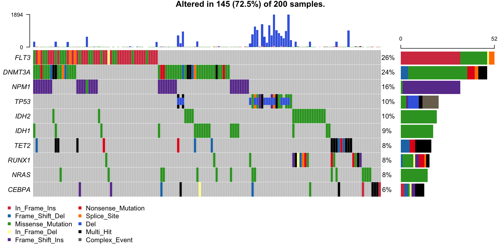
This plot shows frequent deletions in TP53 gene which is located on one of the significantly deleted locus 17p13.2.
In case there is no GISTIC results available, one can generate a table containing CN status for known genes in known samples. This can be easily created and read along with MAF file.
For example lets create a dummy CN alterations for DNMT3A in random 20 samples.
set.seed(seed = 1024) barcodes = as.character(getSampleSummary(x = laml)[,Tumor_Sample_Barcode]) #Random 20 samples dummy.samples = sample(x = barcodes, size = 20, replace = FALSE) #Genarate random CN status for above samples cn.status = sample( x = c('ShallowAmp', 'DeepDel', 'Del', 'Amp'), size = length(dummy.samples), replace = TRUE ) custom.cn.data = data.frame( Gene = "DNMT3A", Sample_name = dummy.samples, CN = cn.status, stringsAsFactors = FALSE ) head(custom.cn.data) #> Gene Sample_name CN #> 1 DNMT3A TCGA-AB-2898 ShallowAmp #> 2 DNMT3A TCGA-AB-2879 Del #> 3 DNMT3A TCGA-AB-2920 Amp #> 4 DNMT3A TCGA-AB-2866 Del #> 5 DNMT3A TCGA-AB-2892 Del #> 6 DNMT3A TCGA-AB-2863 ShallowAmp laml.plus.cn = read.maf(maf = laml.maf, cnTable = custom.cn.data, verbose = FALSE) oncoplot(maf = laml.plus.cn, top = 5)
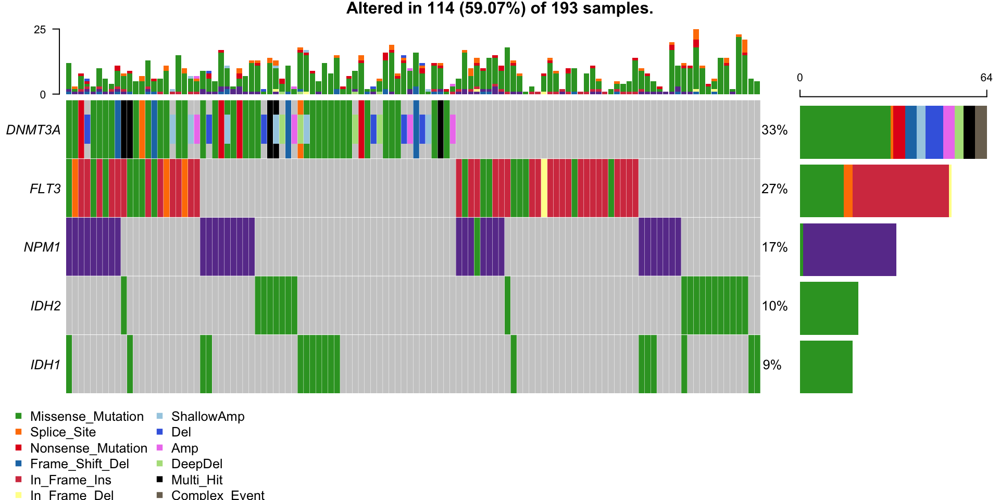
leftBarData, rightBarData and topBarData arguments can be used to display additional values as barplots. Below example demonstrates adding gene expression values and mutsig q-values as left and right side bars respectivelly.
#Selected AML driver genes aml_genes = c("TP53", "WT1", "PHF6", "DNMT3A", "DNMT3B", "TET1", "TET2", "IDH1", "IDH2", "FLT3", "KIT", "KRAS", "NRAS", "RUNX1", "CEBPA", "ASXL1", "EZH2", "KDM6A") #Variant allele frequcnies (Right bar plot) aml_genes_vaf = subsetMaf(maf = laml, genes = aml_genes, fields = "i_TumorVAF_WU", mafObj = FALSE)[,mean(i_TumorVAF_WU, na.rm = TRUE), Hugo_Symbol] colnames(aml_genes_vaf)[2] = "VAF" head(aml_genes_vaf) #> Hugo_Symbol VAF #> 1: ASXL1 37.11250 #> 2: CEBPA 22.00235 #> 3: DNMT3A 43.51556 #> 4: DNMT3B 37.14000 #> 5: EZH2 68.88500 #> 6: FLT3 34.60294 #MutSig results (Right bar plot) laml.mutsig = system.file("extdata", "LAML_sig_genes.txt.gz", package = "maftools") laml.mutsig = data.table::fread(input = laml.mutsig)[,.(gene, q)] laml.mutsig[,q := -log10(q)] #transoform to log10 head(laml.mutsig) #> gene q #> 1: FLT3 12.64176 #> 2: DNMT3A 12.64176 #> 3: NPM1 12.64176 #> 4: IDH2 12.64176 #> 5: IDH1 12.64176 #> 6: TET2 12.64176 oncoplot( maf = laml, genes = aml_genes, leftBarData = aml_genes_vaf, leftBarLims = c(0, 100), rightBarData = laml.mutsig, rightBarLims = c(0, 20) )
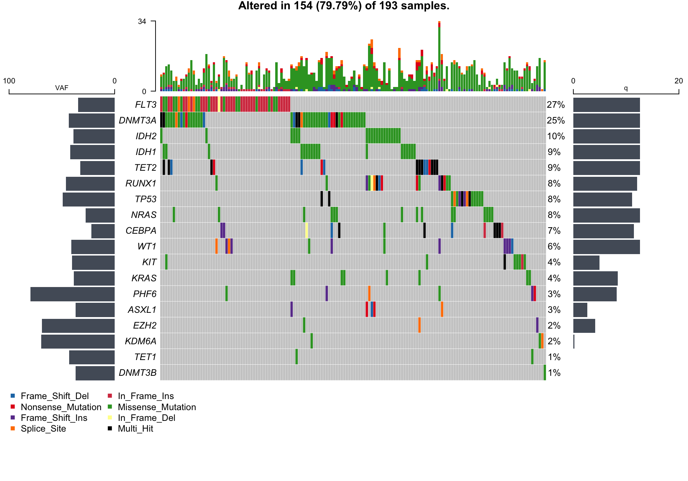
Annotations are stored in clinical.data slot of MAF.
getClinicalData(x = laml) #> Tumor_Sample_Barcode FAB_classification days_to_last_followup #> 1: TCGA-AB-2802 M4 365 #> 2: TCGA-AB-2803 M3 792 #> 3: TCGA-AB-2804 M3 2557 #> 4: TCGA-AB-2805 M0 577 #> 5: TCGA-AB-2806 M1 945 #> --- #> 189: TCGA-AB-3007 M3 1581 #> 190: TCGA-AB-3008 M1 822 #> 191: TCGA-AB-3009 M4 577 #> 192: TCGA-AB-3011 M1 1885 #> 193: TCGA-AB-3012 M3 1887 #> Overall_Survival_Status #> 1: 1 #> 2: 1 #> 3: 0 #> 4: 1 #> 5: 1 #> --- #> 189: 0 #> 190: 1 #> 191: 1 #> 192: 0 #> 193: 0
Include FAB_classification from clinical data as one of the sample annotations.
oncoplot(maf = laml, genes = aml_genes, clinicalFeatures = 'FAB_classification')
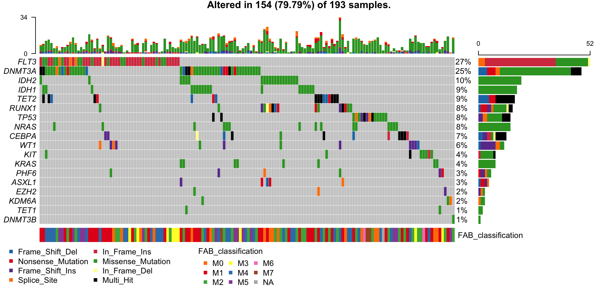
More than one annotations can be included by passing them to the argument clinicalFeatures. Above plot can be further enhanced by sorting according to annotations. Custom colors can be specified as a list of named vectors for each levels.
#Color coding for FAB classification fabcolors = RColorBrewer::brewer.pal(n = 8,name = 'Spectral') names(fabcolors) = c("M0", "M1", "M2", "M3", "M4", "M5", "M6", "M7") fabcolors = list(FAB_classification = fabcolors) print(fabcolors) #> $FAB_classification #> M0 M1 M2 M3 M4 M5 M6 M7 #> "#D53E4F" "#F46D43" "#FDAE61" "#FEE08B" "#E6F598" "#ABDDA4" "#66C2A5" "#3288BD" oncoplot( maf = laml, genes = aml_genes, clinicalFeatures = 'FAB_classification', sortByAnnotation = TRUE, annotationColor = fabcolors )
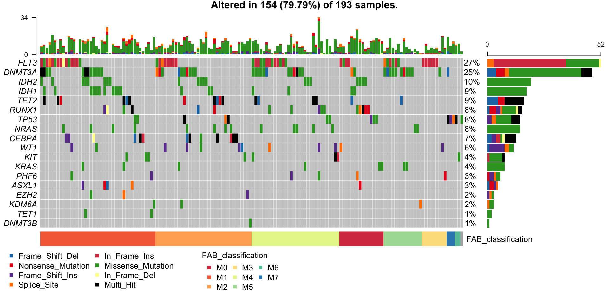
If you prefer to highlight mutations by a specific attribute, you can use additionalFeature argument.
Example: Highlight all mutations where alt allele is C.
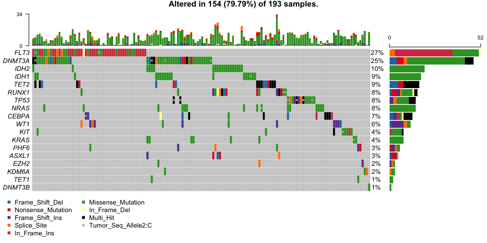
Note that first argument (Tumor_Seq_Allele2) must a be column in MAF file, and second argument (C) is a value in that column. If you want to know what columns are present in the MAF file, use getFields.
getFields(x = laml) #> [1] "Hugo_Symbol" "Entrez_Gene_Id" "Center" #> [4] "NCBI_Build" "Chromosome" "Start_Position" #> [7] "End_Position" "Strand" "Variant_Classification" #> [10] "Variant_Type" "Reference_Allele" "Tumor_Seq_Allele1" #> [13] "Tumor_Seq_Allele2" "Tumor_Sample_Barcode" "Protein_Change" #> [16] "i_TumorVAF_WU" "i_transcript_name"
Genes can be auto grouped based on their Biological processess by setting pathways = 'auto' or by providing custom pathway list in the form of a two column tsv file or a data.frame containing gene names and their corresponding pathway.
setting pathways = 'auto' draws top 3 most affected pathways
oncoplot(maf = laml, pathways = "auto", gene_mar = 8, fontSize = 0.6) #> Drawing upto top 3 mutated pathways #> Pathway N n_affected_genes fraction_affected #> 1: RTK_signaling 16 6 0.37500000 #> 2: Epigenetics_DNA_modifiers 1 1 1.00000000 #> 3: Metabolism 2 2 1.00000000 #> 4: Transcription_factor 39 11 0.28205128 #> 5: Genome_integrity 14 5 0.35714286 #> 6: MAPK_signaling 9 3 0.33333333 #> 7: Other_signaling 28 5 0.17857143 #> 8: Splicing 6 3 0.50000000 #> 9: Histone_modification 3 2 0.66666667 #> 10: Other 22 3 0.13636364 #> 11: Protein_homeostasis/ubiquitination 15 NA NA #> 12: Immune_signaling 10 3 0.30000000 #> 13: Chromatin_other 14 7 0.50000000 #> 14: NOTCH_signaling 1 1 1.00000000 #> 15: PI3K_signaling 9 1 0.11111111 #> 16: RNA_abundance 15 1 0.06666667 #> 17: Chromatin_SWI/SNF_complex 8 NA NA #> 18: Wnt/B-catenin_signaling 8 NA NA #> Mutated_samples Fraction_mutated_samples #> 1: 63 0.326424870 #> 2: 48 0.248704663 #> 3: 37 0.191709845 #> 4: 35 0.181347150 #> 5: 28 0.145077720 #> 6: 25 0.129533679 #> 7: 13 0.067357513 #> 8: 11 0.056994819 #> 9: 4 0.020725389 #> 10: 4 0.020725389 #> 11: 4 0.020725389 #> 12: 3 0.015544041 #> 13: 2 0.010362694 #> 14: 1 0.005181347 #> 15: 1 0.005181347 #> 16: 1 0.005181347 #> 17: 0 0.000000000 #> 18: 0 0.000000000
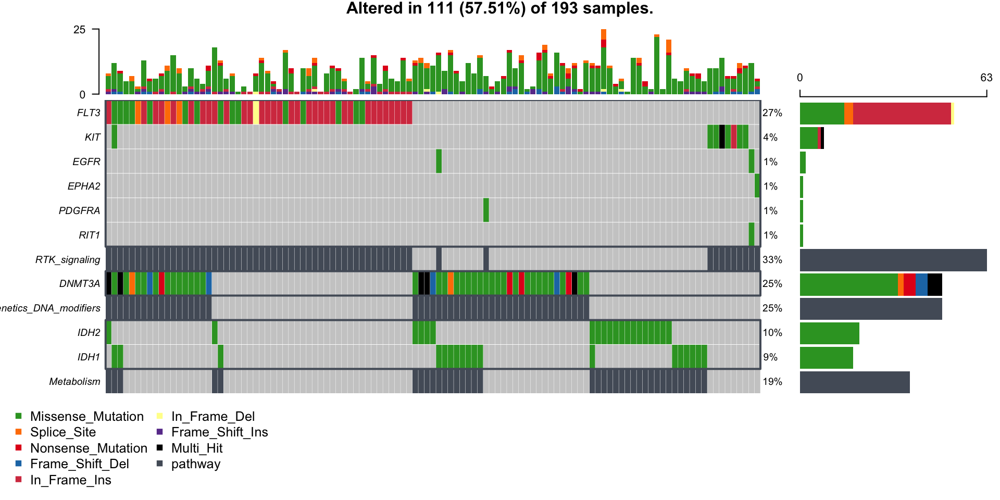
pathways = data.frame( Genes = c( "TP53", "WT1", "PHF6", "DNMT3A", "DNMT3B", "TET1", "TET2", "IDH1", "IDH2", "FLT3", "KIT", "KRAS", "NRAS", "RUNX1", "CEBPA", "ASXL1", "EZH2", "KDM6A" ), Pathway = rep(c( "TSG", "DNAm", "Signalling", "TFs", "ChromMod" ), c(3, 6, 4, 2, 3)), stringsAsFactors = FALSE ) head(pathways) #> Genes Pathway #> 1 TP53 TSG #> 2 WT1 TSG #> 3 PHF6 TSG #> 4 DNMT3A DNAm #> 5 DNMT3B DNAm #> 6 TET1 DNAm oncoplot(maf = laml, pathways = pathways, gene_mar = 8, fontSize = 0.6)
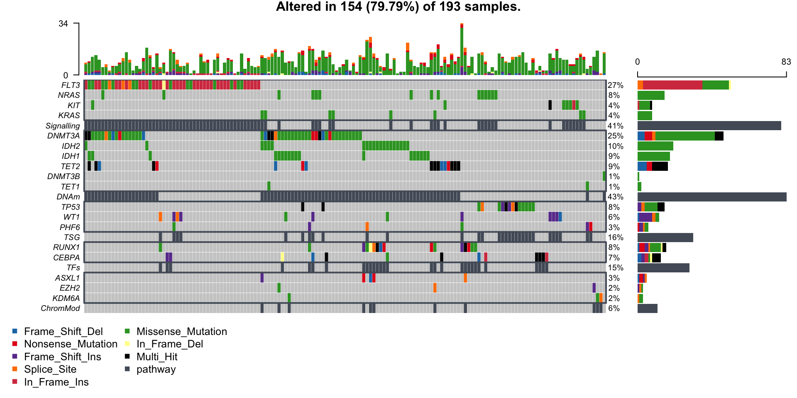
oncoplot( maf = laml.plus.gistic, draw_titv = TRUE, pathways = pathways, clinicalFeatures = c('FAB_classification', 'Overall_Survival_Status'), sortByAnnotation = TRUE, additionalFeature = c("Tumor_Seq_Allele2", "C"), leftBarData = aml_genes_vaf, leftBarLims = c(0, 100), rightBarData = laml.mutsig[,.(gene, q)], )
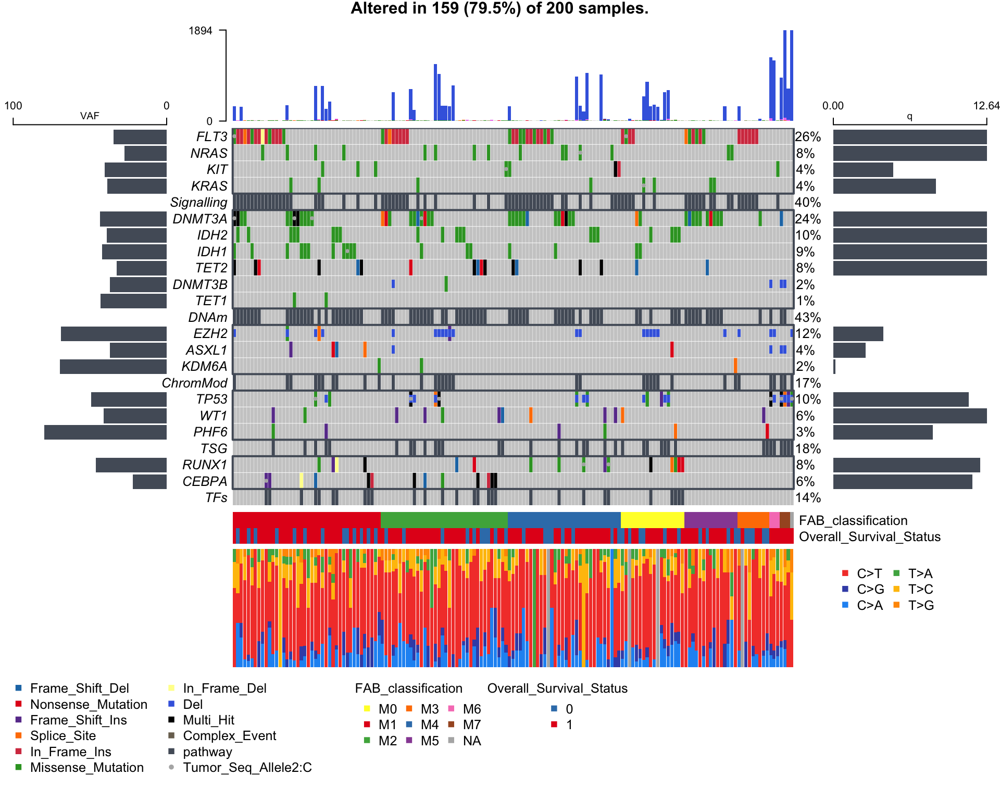
sessionInfo() #> R version 4.0.2 (2020-06-22) #> Platform: x86_64-apple-darwin17.0 (64-bit) #> Running under: macOS Catalina 10.15.6 #> #> Matrix products: default #> BLAS: /Library/Frameworks/R.framework/Versions/4.0/Resources/lib/libRblas.dylib #> LAPACK: /Library/Frameworks/R.framework/Versions/4.0/Resources/lib/libRlapack.dylib #> #> locale: #> [1] en_US.UTF-8/en_US.UTF-8/en_US.UTF-8/C/en_US.UTF-8/en_US.UTF-8 #> #> attached base packages: #> [1] stats graphics grDevices utils datasets methods base #> #> other attached packages: #> [1] maftools_2.4.10 #> #> loaded via a namespace (and not attached): #> [1] Rcpp_1.0.5 rstudioapi_0.11 knitr_1.29 magrittr_1.5 #> [5] splines_4.0.2 MASS_7.3-51.6 lattice_0.20-41 R6_2.4.1 #> [9] rlang_0.4.7 stringr_1.4.0 tools_4.0.2 grid_4.0.2 #> [13] data.table_1.13.0 xfun_0.16 R.oo_1.23.0 htmltools_0.5.0 #> [17] yaml_2.2.1 survival_3.2-3 assertthat_0.2.1 digest_0.6.25 #> [21] rprojroot_1.3-2 pkgdown_1.5.1 crayon_1.3.4 Matrix_1.2-18 #> [25] RColorBrewer_1.1-2 R.utils_2.9.2 fs_1.5.0 memoise_1.1.0 #> [29] evaluate_0.14 rmarkdown_2.3 stringi_1.4.6 compiler_4.0.2 #> [33] R.methodsS3_1.8.0 desc_1.2.0 backports_1.1.8